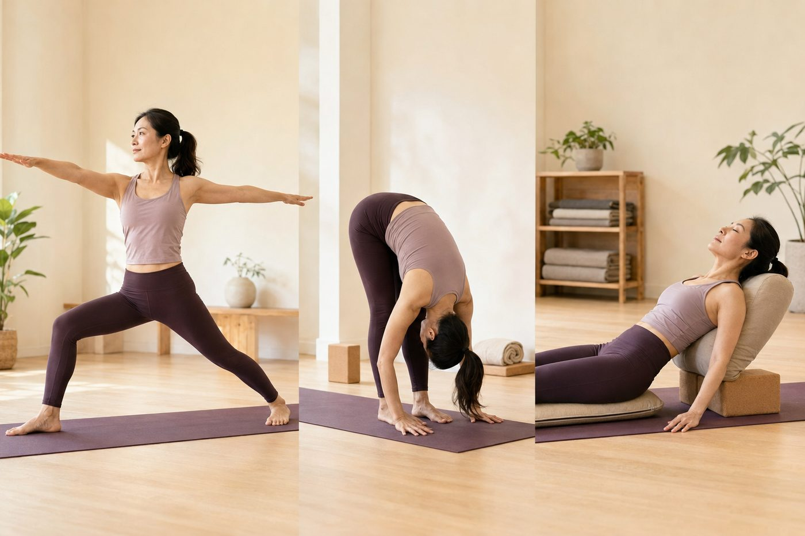

瑜伽動作分幾大類？一次看懂各自在幫你什麼

第一次認真接觸瑜伽，你可能會被嚇到：光是有名字的體位法就好幾百個，名字還都很難記。別急著背。這幾百個動作，其實可以收進六個大家族，每一族都在幫你的身體處理一件很具體的事。看懂這張地圖，你就不會再瞎練。
動作看起來幾百個，脊椎能做的其實就那幾件事
你的脊椎，還有連著它的髖，能做的動作攤開來講其實不多——往前彎、往後仰、往兩側扭轉，再加上把身體的地基站穩、把緊住的髖打開、還有讓整個人放鬆下來。幾百個體位法，多半就是這幾件基本的事，換個角度、換個支撐、換個難度的變化題。先看懂這幾件事，比死背名字有用太多。
這裡有個很多人沒想過的地方：大家常以為瑜伽從頭到尾都在「拉筋」，越拉越軟就越厲害。其實不是。六大類裡，只有一部分在把肌肉拉長，另一部分剛好相反，是在教你的肌肉「出力、穩住」。如果你把這兩件事搞混，拿對付「太緊」的辦法去對付一個其實「太弱」的部位，只會越練越卡、越拉越沒感覺。
六大類，各自在忙什麼
把地圖攤開，六個家族分別在幫你處理這些事：
- 後彎開胸：讓胸椎往後延伸、把胸前的胸大肌和胸小肌拉開，同時叫醒背後的菱形肌、下斜方肌。它做的事，剛好跟你整天低頭、肩膀往前掉的姿勢反過來。
- 前彎伸展：拉長身體後側，尤其是大腿後側的膕旁肌和整條背部的筋膜。重點從來不是手能不能碰到腳尖，而是有沒有從髖關節「摺」下去。
- 扭轉：讓胸椎轉起來，像擰毛巾一樣活動到脊椎兩側的多裂肌。久坐最容易讓胸椎變僵，扭轉就是幫它找回活動度的那一類。
- 站姿穩定：這一類幾乎不在拉筋，而是在練「地基」——腳掌踩穩，臀大肌和核心一起出力，把身體撐直、站穩。
- 開髖：把久坐縮短的髂腰肌拉長，同時讓睡著的臀大肌重新工作。久坐族的髖，幾乎都又緊又沒力。
- 修復放鬆：用有支撐的姿勢配上慢呼吸，讓橫膈膜好好起伏，把神經從緊繃切回放鬆。低能量、累的日子，特別需要這一類。
瑜伽不是在比誰折得深，是在教你的身體「哪裡該鬆、哪裡該穩」——這兩件事，一樣重要。
久坐圓肩，六類不用全練，先抓這三類
如果你是整天坐辦公室、肩膀往前掉、下巴不自覺前伸、小腹又有點前推的那一種——這其實有個名字，叫上交叉症候群的體態——那六大類裡，真正該優先補的，其實只有三類：
- 開胸：把往前掉的肩膀帶回來。你的問題通常是胸前太緊、上背太弱，開胸這一類正好對症下藥。
- 鬆髖：久坐讓髂腰肌縮短、把骨盆往前拉，連帶讓腰痠、小腹凸。鬆髖能幫你把骨盆放回中間。
- 穩核心：這裡的核心不是仰臥起坐那種表層腹肌，而是深層的腹橫肌和多裂肌，像一件天然的束腹，把你的腰穩穩托住。
你可能會忍不住想去追倒立、深後彎那種看起來很厲害的動作。但說老實話，對久坐族來說，那些不但幫助有限，還常常因為最基本的穩定還沒建立好而受傷。把這三類做確實、做到位，效果遠比硬凹一個高難度姿勢好得多。尤其是開胸，是圓肩族的重點，想搞懂它到底在開什麼，「開胸」到底在開什麼這篇講得更細。
這三類還有一個共通的難處：當你的胸很緊、髖很卡、核心又還沒力，光靠自己常常做不到位，不是塌腰、就是聳肩硬撐，用錯地方代償。壁繩的好處正在這裡——繩子給你支撐和借力，讓你在有保護、不硬拚的狀態下，慢慢把胸打開、把髖放鬆、把核心找出來。想多認識它是怎麼運作的，可以看認識壁繩瑜伽。
知道有六大類，不代表知道你自己缺哪一類
AI 體態檢測在教室現場幫你量出圓肩、骨盆和脊椎的實際角度，讓你清楚知道六類裡，你該先補哪一類最划算。原價 $999，首次加 LINE 只要 $199。
加 LINE，預約檢測（首次 $199）→所以，你可以怎麼做
別被幾百個體位法的名字嚇到，也別急著追高難度。先認得這六大家族，再知道自己久坐圓肩最該先顧的是開胸、鬆髖、穩核心這三類，你就已經抓到重點了。剩下的，是把基本動作一次一次做確實。這些改變是慢慢累積出來的，一次想到位反而容易受傷；一週動幾次、每次把幾個基礎動作做好，會比偶爾硬拚一個厲害姿勢有用得多。你怎麼對待身體，它都會記得。
本頁為體態與姿勢的一般衛教與練習分享，非醫療診斷或治療。若有疼痛、舊傷或特殊病史，請先諮詢合格醫療專業人員。